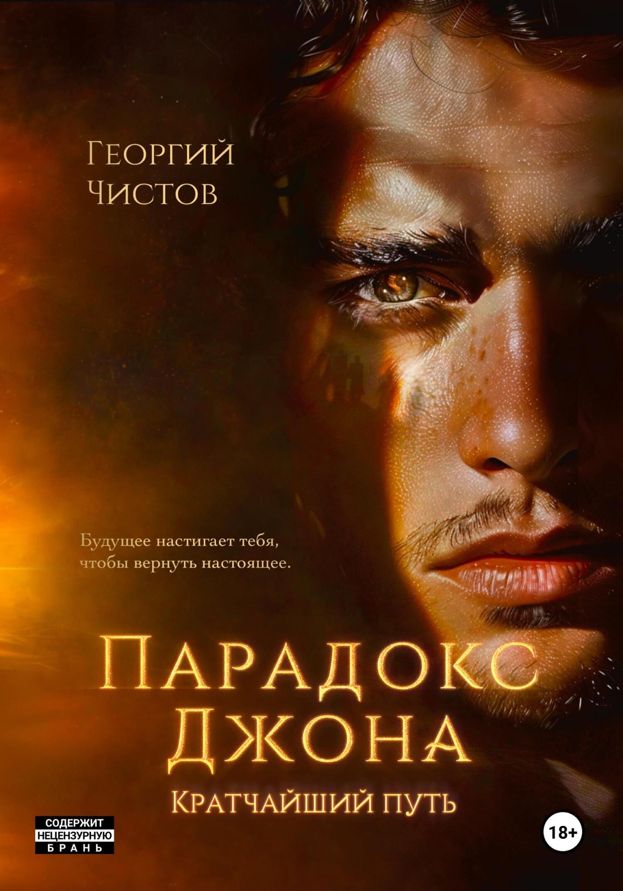
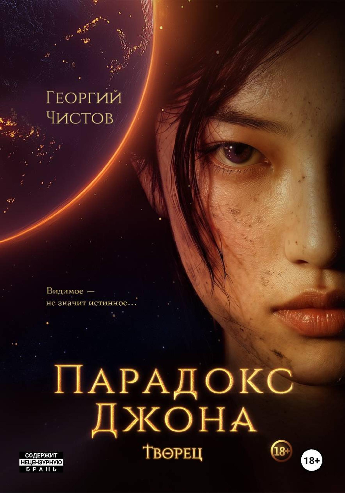
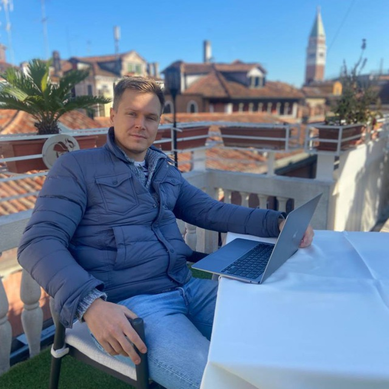

1
Ответы на любые ваши вопросы
Задайте вопрос заранее или прямо в эфире. Стыдных вопросов нет: «врёт», «всё забывает», «пишет без души», «какую выбрать», «тексты утекут» — разберём каждый.



Никаких продаж — только ИИ‑инструменты для писателей.
Георгий Чистов, автор дилогии «Парадокс Джона», покажет на экране, как нейросеть работает на книгу, не написав в ней ни одной фразы.
Никаких продаж — только ИИ‑инструменты для писателей.
Вы давно просили рассказать, как нейросети используют писатели. Рассказывает и показывает писатель.
Задайте вопрос заранее или прямо в эфире. Стыдных вопросов нет: «врёт», «всё забывает», «пишет без души», «какую выбрать», «тексты утекут» — разберём каждый.
На экране решаем ваши писательские и не только задачи: отредактировать, не трогая стиль; собрать структуру из разрозненных кусков; проверить факты; превратить надиктовку в текст; написать письмо издателю. Как руками — и как с помощником.
Не вебинар, а встреча в Zoom: писатель говорит с писателями о своём пути, ошибках и о том, что нейросеть делать не должна. Без продаж и без обещаний «книга за 30 дней».
Эфир бесплатный. После регистрации на почту придёт приглашение в чат «Нейросреда» в Telegram и MAX — там вопросы Георгию, напоминания и писательские ИИ‑лайфхаки. Ссылка для участия придёт за час до эфира.
«Я не айтишник. Инженер по образованию, потом кормил людей — кейтеринг, потом онлайн‑школа. Первую книгу издавал три месяца, с корректором за 45 тысяч. Вторую выпустил за месяц — вместе с переводом и трейлером. И нейросеть не написала в моих книгах ни одной фразы».
Георгий Чистов — писатель, автор дилогии «Парадокс Джона» («Кратчайший путь», «Творец»). Сейчас в Тампе: издаёт книги на английском и показывает продюсерам сценарий по ним.

СГСергей Гончаренко, сооснователь и директор GetPublishED.